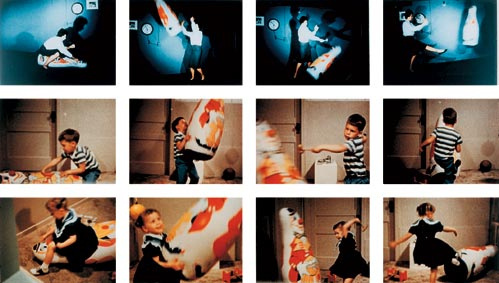

The Big Picture: Moving Beyond the Box
Classical and operant conditioning both rely on direct experiences, you are the one hearing the bell, and you are the one receiving the reward or punishment. But human (and animal) learning is far more complex than simply reacting to direct stimuli. We also learn by thinking, processing, and watching the world around us. This final topic of Unit 3 bridges the gap between behaviorism and cognitive psychology, exploring how internal thoughts and social observations dictate our behavior.
1.Learning by Watching: Social Learning Theory
Albert Bandura challenged strict behaviorism by proposing Social Learning Theory, which argues that learning is a cognitive process that frequently occurs through observation, rather than requiring personal experience with a direct consequence.
At the heart of this theory is Modeling: the process of acquiring new behaviors by actively observing and imitating the actions of others. Research demonstrates that we don't just mimic anyone; the more similar a model is to the observer (in age, gender, or perceived status), the more likely the behavior is to be successfully learned and replicated.
Vicarious Consequences
We do not need to be personally punished to know a stove is hot. We can learn through Vicarious Conditioning, which occurs when an individual observes the consequences (either rewards or punishments) that another person receives for their behavior, and subsequently adjusts their own behavior accordingly. If you watch a classmate get praised for raising their hand, you become more likely to raise yours.

2.Cognitive Factors: Thinking About Learning
Strict behaviorists believed that learning could not happen without a tangible reward. However, cognitive psychologists proved that our brains are constantly processing and storing information in the background, even when there is no immediate incentive to do so.
Latent Learning and Cognitive Maps
A classic example of hidden learning is Latent Learning: learning that occurs without any immediate reinforcement or obvious demonstration. This knowledge remains hidden in the background but becomes instantly apparent the moment there is a motivation or reward to show it.
Latent learning is often demonstrated through the creation of Cognitive Maps, which are internal, mental representations of the layout of physical spaces or environments. For example, if you walk around a new school for a week without paying much attention, you are subconsciously building a cognitive map. You might not demonstrate this knowledge until a teacher offers you a piece of candy to quickly run a pass to the main office, suddenly, you know exactly which hallways to take!
The "Aha!" Moment
Sometimes, learning doesn't happen gradually through shaping or repetition. Insight Learning occurs when the solution to a problem suddenly becomes clear without any prior trial-and-error, association, consequence, or modeling present. This is the classic "aha" moment when the pieces of a puzzle simply snap together in your mind.
3.Don't Trip Up! (Common Misconceptions)
⚠️ Vicarious Conditioning vs. Operant Conditioning: It is easy to mix these up on the AP Exam! Remember that in Operant Conditioning, the learner is the one who directly receives the consequence. In Vicarious Conditioning, the learner is just a bystander watching someone else receive the consequence.
4.Key Terms in This Topic
5.Practice This Topic
Test yourself on exactly what you just read, then mix it up with games and puzzles. The numbers on each button show how much material is waiting for you.
The same self-check questions that close your guided notes. Find out whether social and cognitive learning stuck.
Start Quick Check →Flip through the key terms from this topic, including modeling, vicarious conditioning, and latent learning.
Open the deck →AP-style multiple choice on social learning theory, cognitive maps, latent learning, and insight, with an explanation after every answer.
Take the quiz →You've reached the end of Unit 3. Mix it up to review the whole unit before you move on.